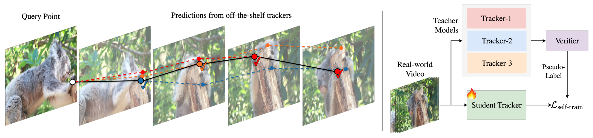
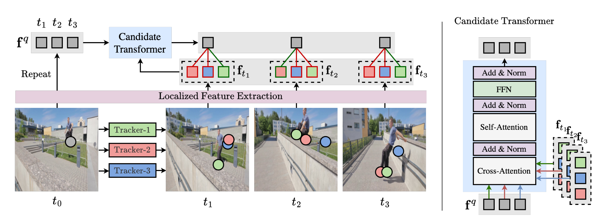

Real-World Point Tracking with Verifier-Guided Pseudo-Labeling: choosing which teacher to trust, frame by frame
The short version. Long-term point tracking, also called tracking any point (TAP), asks a model to follow a user-specified two-dimensional point through a video and predict both its location and its visibility. The strongest recent TAP trackers are trained mostly on synthetic videos, because dense, frame-accurate trajectories in real videos are expensive to annotate. That leaves a sim-to-real gap: real footage brings different textures, nonrigid motion, occlusion, lighting, and sensor artifacts. Self-training on unlabeled real videos should help, but the teacher tracker that generates pseudo-labels is not reliable in the same way at every frame. Different teachers also fail in weakly correlated ways, so random selection or fixed averaging can turn teacher noise into tracking drift. This paper reframes pseudo-labeling as per-frame reliability estimation. It trains a verifier, only with synthetic ground truth, to score which candidate teacher should be trusted at each frame. Using that verifier to fine-tune Track-On2 gives Track-On-R; on the four real-world benchmarks in the paper, EgoPoints, RoboTAP, TAP-Vid Kinetics, and TAP-Vid DAVIS, Track-On-R is the best row in Table 1, with EgoPoints $\delta^x_{\mathrm{avg}}$ moving from 61.7 for the Track-On2 base to 67.3.
{kind=link}

1. Motivation: why a single pseudo-label teacher is fragile
A point tracker sees an RGB video $V=\{I_1,\ldots,I_T\}$ and a query point $q_{t_0}$ at time $t_0$. Its job is to predict future coordinates and visibility:
Most TAP systems learn this mapping from labeled synthetic data $\mathcal{D}_{\mathrm{syn}}$. Real videos $\mathcal{D}_{\mathrm{real}}$ usually have no dense point labels, so prior work uses self-training: run a teacher tracker on real video, treat its predictions as labels, and fine-tune a student. The weak link is the teacher.
The paper's oracle experiment makes the failure concrete. At each frame, an oracle can choose the teacher prediction closest to ground truth. That oracle is far above random selection and individual teachers, which means there is real headroom in per-frame selection. The catch is that the oracle uses ground truth, while real fine-tuning does not have ground truth. The verifier is the learned replacement for that oracle.
Q: Why not average all teacher trajectories?
Guide: averaging helps only when errors are small and centered around the truth.
A: The paper argues that point trackers fail in structured ways. One tracker may drift after occlusion. Another may jump to a nearby object. A third may be stable on slow motion but weak on fast motion. Averaging those predictions can place the pseudo-label between objects or preserve a drifting error. The useful operation is selection, not smoothing.
Takeaway: The problem is not teacher diversity by itself; it is missing a frame-level rule for deciding when that diversity should be trusted.
2. Contribution: a verifier, not another tracker
The paper's stated contributions are three. First, it introduces a verifier meta-model that scores candidate tracker predictions per frame and can be used both for training-time pseudo-label selection and optional inference-time ensembling. Second, it builds a verifier-guided pseudo-labeling framework for fine-tuning on raw real videos without manual point annotations. Third, it reports experiments and ablations across real-world point-tracking benchmarks showing that the verifier uses complementary teacher behavior instead of being dominated by one teacher.
The important design boundary is that the verifier does not output coordinates. It compares the local appearance of the original query point with the local appearance around each candidate prediction. It then produces a reliability distribution over the candidates for that frame. This makes the verifier closer to a learned judge than to a replacement tracker.
One inference from the paper is broader: the pseudo-labeling problem becomes an uncertainty-routing problem. The authors do not claim that any ensemble will work. Their evidence is for a particular learned selector trained on synthetic perturbations and evaluated with the listed teachers.
3. Datasets and task setup
The verifier is trained on K-EPIC, a synthetic dataset of 11K videos, each 24 frames long, with up to 384 tracks per clip. The student tracker starts from Track-On2 pretrained on TAP-Vid Kubric. Real-world adaptation uses videos from TAO, OVIS, and VSPW; the paper says it keeps videos longer than 48 frames and obtains 4,864 real-world sequences, while the experiment setup also mentions 8K videos from the filtered collection. The paper does not explain this count mismatch.
Evaluation uses four public real-world benchmarks. TAP-Vid DAVIS contains 30 real videos from DAVIS. TAP-Vid Kinetics uses 1000 validation videos from Kinetics-700-2020. RoboTAP has 265 robotic sequences averaging over 250 frames. EgoPoints contains long egocentric videos, some spanning thousands of frames.
The metrics are standard for TAP. Average Jaccard (AJ) combines localization and visibility. Occlusion Accuracy (OA) measures visibility prediction. $\delta^x_{\mathrm{avg}}$ is the average proportion of visible points tracked within 1, 2, 4, 8, and 16 pixel thresholds. Higher is better for all three.
Evaluation details stated in the paper
All videos are downsampled to $256\times256$ for TAP-Vid and RoboTAP. EgoPoints is resized to $384\times512$, but evaluated at $256\times256$ following its official protocol. The queried-first setting is used: the first visible point in a trajectory becomes the query, and tracking proceeds forward.
4. Pipeline: from candidate tracks to pseudo-labels
The training-time pipeline has four steps. First, several pretrained teacher trackers run on the same query point in a real video. Second, their trajectories become a candidate set $C\in\mathbb{R}^{L\times M\times2}$, where $L$ is the trajectory length and $M$ is the number of teachers. Third, the verifier scores those candidates at every frame. Fourth, the highest-scoring candidate becomes the coordinate pseudo-label, while visibility is estimated by majority vote across teachers.
The paper uses six teacher trackers during inference and real-world fine-tuning: Track-On2, BootsTAPIR, BootsTAPNext, Anthro-LocoTrack, AllTracker, and the window variant of CoTracker3. The student is Track-On2. After fine-tuning with verifier-generated labels, the student is called Track-On-R.
Query sampling is also part of the pipeline. Two thirds of real-video queries come from Scale-Invariant Feature Transform (SIFT) detections. The remaining third comes from motion-salient regions found by grayscale frame differencing with mild spatial smoothing. This keeps the pseudo-labeling budget focused on visible texture and moving regions rather than static, low-information points.
Q: Why is the verifier trained on synthetic labels if it will judge real videos?
A: Synthetic data gives exact ground-truth trajectories. The paper uses that supervision to create many perturbed candidates with known distances to the true point. The verifier does not learn real-world labels directly. It learns a comparison rule: which candidate local appearance is most consistent with the query local appearance over time.
Takeaway: The transfer assumption is not that synthetic motion looks real. It is that reliability cues learned from candidate-versus-query consistency transfer well enough to real videos.
5. Method: per-frame reliability as a distribution
The verifier receives a video, a query point, and candidate trajectories. It outputs a score vector for each future frame:
Local features
The visual backbone is the frozen convolutional neural network encoder from pretrained CoTracker3. For each frame, it produces a dense feature map:
The query point is the stable visual reference. The verifier bilinearly samples the feature map at the query location, then uses deformable attention to aggregate local context around the query and around each candidate location:
$$h^q_{t_0}=\phi_{\mathrm{def}}(q_{\mathrm{sample}},F_{t_0},q_{t_0}),\qquad h_t=\phi_{\mathrm{def}}(q_{\mathrm{sample}},F_t,C_t),\quad t\gt t_0.$$
Those descriptors are augmented with a sinusoidal displacement embedding and a learned identity embedding. The identity embedding tells the model whether a token is the query or a candidate. The displacement embedding tells it where the candidate moved relative to the query.
Candidate Transformer
{kind=link}

The Candidate Transformer extends a transformer decoder. The cross-attention is restricted: at frame $t$, the query feature attends only to the $M$ candidates from the same frame. After that, temporal self-attention connects the decoded query features across frames. The paper states that no attention mask is used and that all candidate predictions are included even when the point is occluded.
The verifier then computes a temperature-scaled reliability distribution:
Soft contrastive training target
During verifier training, the paper does not use real labels. It starts from a synthetic ground-truth trajectory $p\in\mathbb{R}^{L\times2}$ and creates $M$ perturbed candidates. The perturbations imitate tracker errors such as stable noise, gradual drift, long-term drift, short spikes, abrupt jumps, and complete identity switches.
For each visible frame, the target distribution is a softmax over negative distance to the true point:
The loss is cross-entropy between the predicted reliability distribution and this distance-based target, masked to visible frames:
Why the target is soft
A hard target would say that only the single closest candidate is correct. The paper instead uses a negative-distance softmax. That keeps near-ties near-ties, which matters because several teachers can be almost equally accurate at a frame. The verifier learns a reliability distribution, not just a winner label.
6. Training details
The verifier is trained for 100 epochs on K-EPIC, about 36K iterations with batch size 32. It uses full 24-frame clips and up to 384 tracks per clip. Optimization uses AdamW with mixed precision on 32 A100 64 GB GPUs. The learning rate follows cosine decay with 1% warmup and peaks at $5\times10^{-4}$; weight decay is $1\times10^{-3}$; gradient norms are clipped to 1.0.
The supplementary material gives the verifier architecture more concretely. The visual encoder is initialized from the CoTracker3 video variant. The model width is $D=256$. The feature hierarchy uses strides 4, 8, 16, and 32, with sampling at the highest resolution. A three-layer deformable attention decoder extracts local descriptors. Each Candidate Transformer block uses four attention heads, a feed-forward expansion factor of four, GELU activation, dropout 0.1, and post-normalization.
Track-On-R fine-tuning starts from Track-On2 pretrained on TAP-Vid Kubric. The student is fine-tuned for 24 epochs, about 3.7K iterations, with batch size 32 and mixed precision on 32 A100 64 GB GPUs. The learning rate follows cosine decay without warmup and peaks at $3\times10^{-5}$; weight decay is $1\times10^{-5}$; gradients are clipped to 1.0.
For synthetic clips, the student receives ground-truth coordinates and visibility. For real clips, it receives verifier-selected coordinates and majority-voted visibility. The paper states that the visibility and uncertainty heads are not explicitly supervised for real-world data. GPU-hours, wall-clock time, and inference cost are not stated in the paper.
7. Experiments: ensemble selection and fine-tuning are separate claims
The paper reports two related but different uses of the verifier. The first is inference-time ensembling: at test time, choose among teacher predictions frame by frame. The second is verifier-guided fine-tuning: use the selected predictions as pseudo-labels to train a single Track-On2 student, producing Track-On-R. These should not be merged into one number.
Verifier as an inference-time ensemble selector
The ensemble experiment reports $\delta^x_{\mathrm{avg}}$ for the verifier, the individual teachers, and random teacher selection. The table below transcribes the values visible in the paper's ensemble bar chart. This is not the Track-On-R fine-tuning result.
| Selector / teacher | DAVIS | Kinetics | RoboTAP | EgoPoints |
|---|---|---|---|---|
| Track-On2 | 79.9 | 69.3 | 80.5 | 61.7 |
| BootsTAPNext | 79.5 | 66.8 | 75.1 | 33.6 |
| BootsTAPIR | 74.6 | 65.6 | 75.3 | 55.7 |
| CoTracker3 | 78.0 | 68.2 | 78.9 | 54.0 |
| Anthro-LocoTrack | 77.3 | 68.4 | 79.0 | 61.1 |
| AllTracker | 77.0 | 69.3 | 80.9 | 62.0 |
| Random teacher | 76.8 | 68.0 | 78.3 | 54.0 |
| Verifier | 81.2 | 71.7 | 83.5 | 66.7 |
The verifier is the best selector in all four $\delta^x_{\mathrm{avg}}$ columns. The largest practical point is not the absolute margin on DAVIS, where several values are close, but the consistency: the selector can use weak teachers without committing to them globally.
Track-On-R after verifier-guided fine-tuning
The main comparison groups methods by training regime. The first group uses synthetic pretraining only. The second group uses real-world fine-tuning or additional real-world supervision. AllTracker† is marked by the paper because it uses additional optical-flow datasets with ground truth and is not pseudo-label fine-tuned.
| Model | EgoPoints | RoboTAP | Kinetics | DAVIS | |||||||
|---|---|---|---|---|---|---|---|---|---|---|---|
| $\delta^x_{\mathrm{avg}}$ | OA | AJ | $\delta^x_{\mathrm{avg}}$ | OA | AJ | $\delta^x_{\mathrm{avg}}$ | OA | AJ | $\delta^x_{\mathrm{avg}}$ | OA | |
| Synthetic pretraining | |||||||||||
| TAPIR | 50.2 | 79.9 | 59.6 | 73.4 | 87.0 | 49.6 | 64.2 | 85.0 | 56.2 | 70.0 | 86.5 |
| LocoTrack | 59.6 | 88.6 | 62.3 | 76.2 | 87.1 | 52.9 | 66.8 | 85.3 | 63.0 | 75.3 | 87.2 |
| TAPNext-B | 31.8 | 73.8 | 59.5 | 72.8 | 88.0 | 53.3 | 67.9 | 87.0 | 62.4 | 76.6 | 90.5 |
| CoTracker3 (Window) | — | — | 60.8 | 73.7 | 87.1 | 54.1 | 66.6 | 87.1 | 64.5 | 76.7 | 89.7 |
| Track-On2 | 61.7 | 89.9 | 68.1 | 80.5 | 93.4 | 55.3 | 69.3 | 89.6 | 67.0 | 79.9 | 92.0 |
| Real-world fine-tuning | |||||||||||
| BootsTAPIR | 55.7 | 78.2 | 64.9 | 80.1 | 86.3 | 54.6 | 68.4 | 86.5 | 61.4 | 73.6 | 88.7 |
| Anthro-LocoTrack | 61.1 | 89.5 | 64.7 | 79.2 | 88.4 | 53.9 | 68.4 | 86.4 | 64.8 | 77.3 | 89.1 |
| BootsTAPNext-B | 33.6 | 68.5 | 64.0 | 75.0 | 88.7 | 57.3 | 70.6 | 87.4 | 65.2 | 78.5 | 91.2 |
| CoTracker3 (Window) | 54.0 | 84.4 | 66.4 | 78.8 | 90.8 | 55.8 | 68.5 | 88.3 | 63.8 | 76.3 | 90.2 |
| AllTracker† | 62.0 | 87.1 | 68.8 | 80.9 | 92.2 | 56.8 | 69.3 | 89.1 | 63.7 | 77.0 | 88.7 |
| Track-On-R | 67.3 | 90.2 | 70.9 | 82.6 | 94.0 | 57.8 | 71.0 | 90.5 | 68.1 | 80.3 | 92.5 |
†AllTracker uses additional optical-flow datasets, synthetic and real-world, with ground truth. The paper marks it because this is not the same pseudo-label fine-tuning setting.
Like-for-like, the cleanest comparison is Track-On2 to Track-On-R because the base tracker is the same. EgoPoints $\delta^x_{\mathrm{avg}}$ rises from 61.7 to 67.3, RoboTAP AJ from 68.1 to 70.9, Kinetics AJ from 55.3 to 57.8, and DAVIS AJ from 67.0 to 68.1. Against the full table, Track-On-R is the highest row for every reported benchmark metric. That statement is about Table 1; it is separate from the inference-time ensemble in Table A, where the ensemble selector itself has higher $\delta^x_{\mathrm{avg}}$ than Track-On-R on RoboTAP, Kinetics, and DAVIS.
8. Ablations: what actually carries the result?
Teacher composition
The teacher-composition ablation asks whether adding weaker teachers dilutes the verifier. It does not. In DAVIS, adding model D to models A, B, and C drops the random baseline from 79.4 to 77.5, but the verifier rises from 80.6 to 80.8. That is the paper's strongest evidence that the verifier is using complementary behavior rather than just tracking the strongest global teacher.
| Config | A | B | C | D | E | DAVIS Rand. | DAVIS Ver. | RoboTAP Rand. | RoboTAP Ver. |
|---|---|---|---|---|---|---|---|---|---|
| (i) | yes | yes | no | no | no | 79.5 | 80.6 | 77.4 | 81.8 |
| (ii) | yes | yes | yes | no | no | 79.4 | 80.6 | 77.3 | 82.4 |
| (iii) | yes | yes | yes | yes | no | 77.5 | 80.8 | 77.4 | 82.8 |
| (iv) | yes | yes | yes | yes | yes | 77.7 | 81.1 | 78.0 | 83.1 |
Synthetic-real mixing
The data-mixing ablation is more modest. Real-only fine-tuning is already competitive. Mixing in synthetic supervision improves some visibility numbers, but several changes are small enough to read as within the noise because the paper reports no variance. The scheduled mixture is the default because it combines the strongest EgoPoints localization with the strongest RoboTAP and Kinetics visibility.
| Data | EgoPoints | RoboTAP | Kinetics | DAVIS | ||||
|---|---|---|---|---|---|---|---|---|
| $\delta^x_{\mathrm{avg}}$ | OA | $\delta^x_{\mathrm{avg}}$ | OA | $\delta^x_{\mathrm{avg}}$ | OA | $\delta^x_{\mathrm{avg}}$ | OA | |
| Real | 66.9 | 90.2 | 82.7 | 93.8 | 70.9 | 90.4 | 80.3 | 92.4 |
| Mix | 65.6 | 90.7 | 82.3 | 93.9 | 70.8 | 90.3 | 80.7 | 92.5 |
| Mix + Schedule | 67.3 | 90.2 | 82.6 | 94.0 | 71.0 | 90.5 | 80.3 | 92.5 |
Additional ablations from the supplement
The supplement adds three useful checks. First, real-world fine-tuning does not hurt the synthetic benchmarks shown by the paper. Second, the learned verifier beats fixed ensemble heuristics. Third, expanding the real-video collection from TAO alone to TAO+OVIS+VSPW gives mostly small gains, often within the noise.
| Model | Dynamic Replica $\delta^x_{\mathrm{avg}}$ | PointOdyssey $\delta^x_{\mathrm{avg}}$ | PointOdyssey MTE | PointOdyssey Survival |
|---|---|---|---|---|
| BootsTAPNext | 46.2 | 9.9 | 88.2 | 12.8 |
| CoTracker3 | 72.3 | 44.5 | 20.7 | 56.3 |
| Track-On2 | 74.5 | 45.1 | 22.0 | 57.7 |
| Track-On-R | 75.1 | 53.4 | 13.4 | 63.1 |
| Ensemble | EgoPoints | RoboTAP | Kinetics | DAVIS |
|---|---|---|---|---|
| Geometric median | 60.1 | 81.7 | 70.3 | 80.6 |
| Agreement-based | 61.8 | 81.8 | 70.4 | 80.5 |
| Kalman constant-velocity | 52.1 | 76.5 | 65.8 | 72.8 |
| Minimum acceleration | 54.0 | 78.3 | 67.2 | 77.8 |
| Verifier | 64.8 | 82.8 | 71.2 | 80.8 |
| Real data | Size | EgoPoints | RoboTAP | Kinetics | DAVIS | ||||
|---|---|---|---|---|---|---|---|---|---|
| $\delta^x_{\mathrm{avg}}$ | OA | $\delta^x_{\mathrm{avg}}$ | OA | $\delta^x_{\mathrm{avg}}$ | OA | $\delta^x_{\mathrm{avg}}$ | OA | ||
| TAO | 2.9K | 66.1 | 91.1 | 82.6 | 93.6 | 70.8 | 90.2 | 80.3 | 92.3 |
| Mix | 4.9K | 66.9 | 90.2 | 82.7 | 93.8 | 70.9 | 90.4 | 80.3 | 92.4 |
9. Limitations: the verifier can only select from what it sees
| Boundary | What the paper says | How to read it |
|---|---|---|
| Teacher upper bound | The verifier selects among teacher candidates. | If every teacher is wrong at a frame, the verifier has no correct coordinate to choose. |
| Real-video data quality | The conclusion section says fine-tuning depends on the quality and diversity of available video data. | The method is annotation-free, not data-free. |
| Candidate cost | Real pseudo-labeling runs six teacher trackers before the student update. | The paper gives GPU type for training but not end-to-end pseudo-label generation cost. |
| Real dataset count | Sec. 4.5 states 4,864 real-world sequences; Sec. 5.1 mentions 8K videos. | The paper does not state how those two counts relate. |
| Real labels for verifier | The verifier is trained only with synthetic annotations and synthetic perturbations. | The real-world gain depends on synthetic reliability cues transferring to real teacher errors. |
| Code and wall-clock | Project page is stated in the paper; public code URL, wall-clock training time, and inference latency are not stated in the paper. | Implementation cost cannot be fully derived from the PDF alone. |
Q: What should not be overclaimed?
A: The paper does not show that pseudo-labeling is solved in general. It shows that, for the listed TAP teachers and datasets, a learned per-frame verifier gives better pseudo-labels and a stronger Track-On2 fine-tuned model than random-teacher self-training or single-teacher reliance.
Takeaway: The contribution is a reliability estimator with good evidence in this setup, not a guarantee that any weak teacher pool becomes strong.
10. Summary: the useful abstraction
One sentence: Real-world TAP self-training fails when pseudo-labels inherit frame-level teacher failures, and this paper fixes the bottleneck by learning a verifier that selects the most reliable teacher prediction per frame.
Three takeaways
- For fine-tuning, compare Track-On2 to Track-On-R: the same base tracker improves on all four real-world benchmarks in Table 1.
- For ensembling, keep the claim separate: the verifier selector itself beats individual teachers in $\delta^x_{\mathrm{avg}}$, but it is not the same object as the fine-tuned single student.
- The method's central risk is bounded choice: the verifier can suppress bad teachers, but it cannot recover a correct trajectory absent from the candidate set.
11. References
- Gorkay Aydemir, Fatma Guney, Weidi Xie. Real-World Point Tracking with Verifier-Guided Pseudo-Labeling. arXiv:2603.12217 v1, 12 Mar 2026. The user request identifies the paper as CVPR 2026; the PDF itself is the arXiv version.
- All equations, dataset counts, training details, figures, and tables on this page are taken from the supplied PDF and its supplementary material. When the paper omits a detail, the page says "Not stated in the paper."
- Figure provenance: the overview image and verifier architecture image are local PNGs extracted from the supplied PDF. Other paper visuals without an allowed local PNG are represented as text or HTML tables.